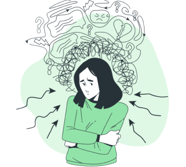

Apa itu Mental Health?
Kesehatan mental adalah kondisi dimana seseorang memiliki kesejahteraan yang terlihat dari dirinya yang mampu menyadari potensinya sendiri, memiliki kemampuan untuk mengatasi tekanan hidup dan normal di setiap situasi dalam kehidupan, mampu bekerja secara produktif dan menghasilkan, serta mampu memberikan kontribusi kepada komunitasnya.
Menurut Federasi Kesehatan Mental Dunia (World Federation for Mental Health) menjelaskan pengertian dari kesehatan mental sebagai kondisi yang memungkinkan adanya perkembangan yang baik secara fisik, intelektual dan emosional, sepanjang hal itu sesuai dengan keadaan orang lain.
Kesehatan mental yang baik memiliki kondisi batin yang berada dalam keadaan tentram, tenang dan positif, sehingga hal tersebut membuat seseorang untuk menikmati kehidupan sehari-hari dan menghargai orang lain di sekitar. Namun ketika sebaliknya ketika memiliki gangguan kesehatan mental maka akan menimbulkan dampak seperti: emosi selalu tinggi dan cepat marah dan mengalami sakit yang tidak dapat dijelaskan.